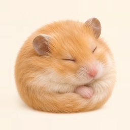
おあいこ
きょうのきもちを、
ハムスターに話そう。
がんばった日も、だめだった日も、あいこ。
App StoreでダウンロードiPhone向け・基本無料
Androidアプリは準備中です。
Android・パソコンの方も、ブラウザ版ならいますぐ遊べます（インストール不要・無料）。
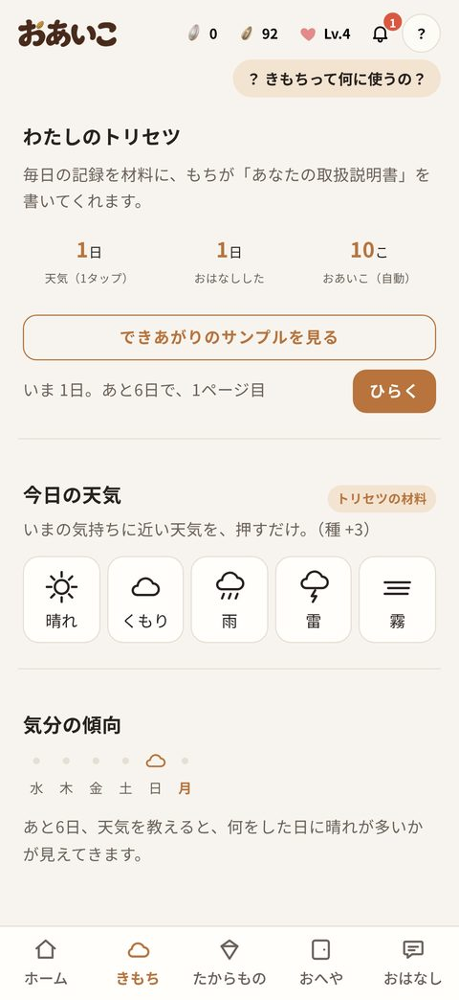
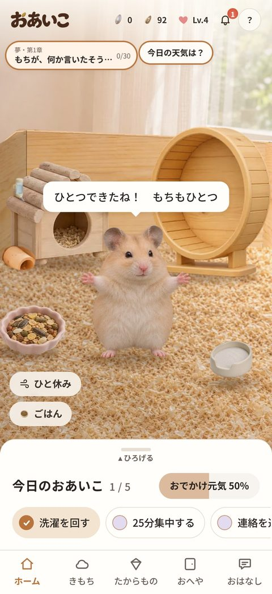
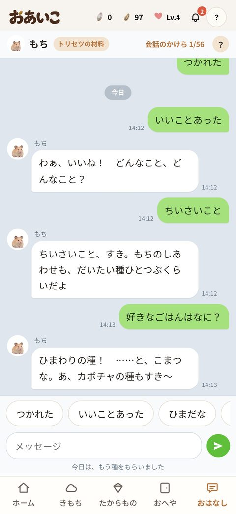
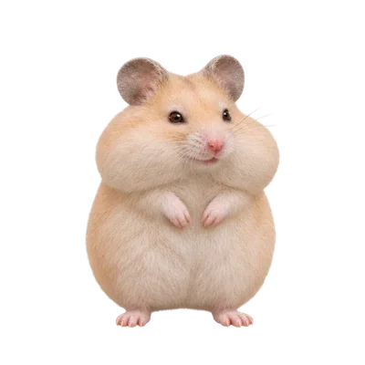
できなかったことを数えるより、きょうのきもちを、ひとつ残す。
それだけで、ハムはちゃんと見ています。
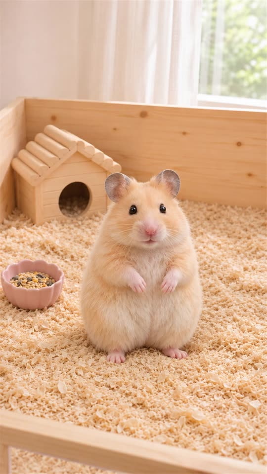
ブラウザで、いますぐ会える
アプリを入れなくても、iPhone・Android・パソコンのブラウザで、ハムスターを指でなでられます。なでた毛なみが指についてきて、頭をなでるとうっとり、足をさわるといやがります。
気に入ったら、名前・からだ・かくし図鑑ごと、アプリに連れていけます。
ブラウザでなでてみるできること
きもちを天気で残す
はれ・くもり・雨・雷・霧。いまの気持ちに近い天気を押すだけ。「よく寝た」「人と話した」など、わけも1タップで残せます。
ハムとおはなし
うれしかったことも、つかれたことも、なんでも話してOK。しりとりの相手もしてくれます。
きょうのおあいこ
「洗濯を回す」「25分集中する」くらいの小さなことを、ハムといっしょに。できた分だけ、ひまわりの種がもらえます。
わたしのトリセツ
毎日の記録をもとに、ハムが「あなたの取扱説明書」を書いてくれます。何をした日に晴れが多いかも見えてきます。
おへやとたからもの
ひまわりの種で、家具やきせかえと交換。おさんぽで見つけたおみやげも集まっていきます。
指でなでる
ホームの「指でなでる」で、動画のハムスターを本当になでられます。大きさや体つきも、自分の子に合わせて変えられます。
記録は端末の中だけ
アカウント登録はいりません。書いたことは、あなたのiPhoneの中にだけ保存されます。
いっしょに暮らす子を、えらぼう
いろんな種類・毛色のハムスターがいます。
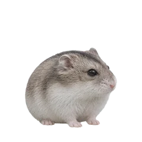
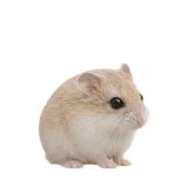
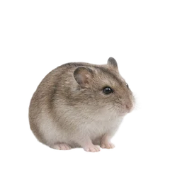
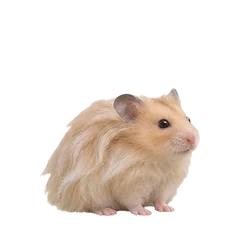
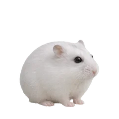
料金
無料
きもちの記録、ハムとのおはなし、きょうのおあいこ、おへやづくりなど、基本の機能はずっと無料で使えます。
おあいこ＋（月額・年額）
もっとハムと過ごしたい人のための、自動更新のサブスクリプションです。毎月「にじの種」300こがつきます。料金はApp Storeのページでご確認ください。
おあいこは、医療やカウンセリングのためのアプリではありません。つらい気持ちが続くときは、身近な人や専門の窓口に相談してください。相談先は、厚生労働省の「まもろうよ こころ」にまとまっています。
サポート・お問い合わせ
ご質問・不具合のご連絡は、下記のメールアドレスまでお送りください。
donpanillo@gmail.com（おあいこ 運営者）
購入・解約について
「おあいこ＋」はApp Storeの自動更新サブスクリプションです。解約は、iPhoneの「設定」→ 自分の名前 →「サブスクリプション」から行えます。返金はAppleの規定に従います（reportaproblem.apple.com）。
機種変更・記録について
記録は端末の中だけに保存されます。機種変更の前に、アプリ内の「書き出し」で保管してください。購入は、アプリ内の「購入を復元」で戻せます。
利用規約
2026年11月19日 制定
1. この規約について
この規約は、アプリ「おあいこ」（以下「本アプリ」）の使い方と、本アプリの運営者（以下「運営者」）との約束を定めるものです。本アプリを使うと、この規約に同意したものとみなします。
2. 本アプリの内容
本アプリは、ハムスターのキャラクターと暮らしながら、毎日の行動や気分を記録するためのアプリです。診断・治療・カウンセリングなど、医療や専門的な助言を行うものではありません。体や心の不調があるときは、医療機関などの専門家に相談してください。
3. 記録の保存
記録は、利用者の端末の中に保存されます（端末のバックアップ機能を使っている場合は、そのバックアップにも含まれます）。運営者のサーバーには送られません。端末の故障・アプリの削除・機種変更などで記録が失われた場合、運営者は復元できません。大切な記録は、アプリ内の「書き出し」で保管してください。
4. 有料プラン「おあいこ＋」
有料プランは、Appleの App Store の仕組みで購入する、自動更新のサブスクリプションです。料金・無料期間・更新日は購入画面に表示します。更新日の24時間前までに解約しないかぎり、自動で更新されます。解約と返金は、Appleの定める方法と規定に従います。無料期間中に解約すると、料金はかかりません。
5. してはいけないこと
法令や公序良俗に反すること、本アプリやその素材を許可なく複製・改変・販売すること、本アプリの動作を妨げること、ほかの人になりすますことは禁止します。
6. 権利
本アプリの画像・文章・プログラムなどの権利は、運営者または正当な権利者に帰属します。
7. 免責
運営者は、本アプリが利用者の目的に合うこと、誤りや不具合がないことを保証しません。本アプリの利用で生じた損害について、運営者に故意または重大な過失がある場合を除き、責任を負いません。
8. 内容の変更・提供の終了
運営者は、本アプリの内容やこの規約を変更することがあります。重要な変更は、アプリ内でお知らせします。
9. 準拠法・裁判所
この規約は日本の法律に従います。争いが起きたときは、運営者の住所地を管轄する地方裁判所または簡易裁判所を、第一審の専属的合意管轄裁判所とします。
10. お問い合わせ
おあいこ 運営者 donpanillo@gmail.com
Appleの標準利用規約
サブスクリプションの利用には、Appleの標準使用許諾契約（EULA）も適用されます。